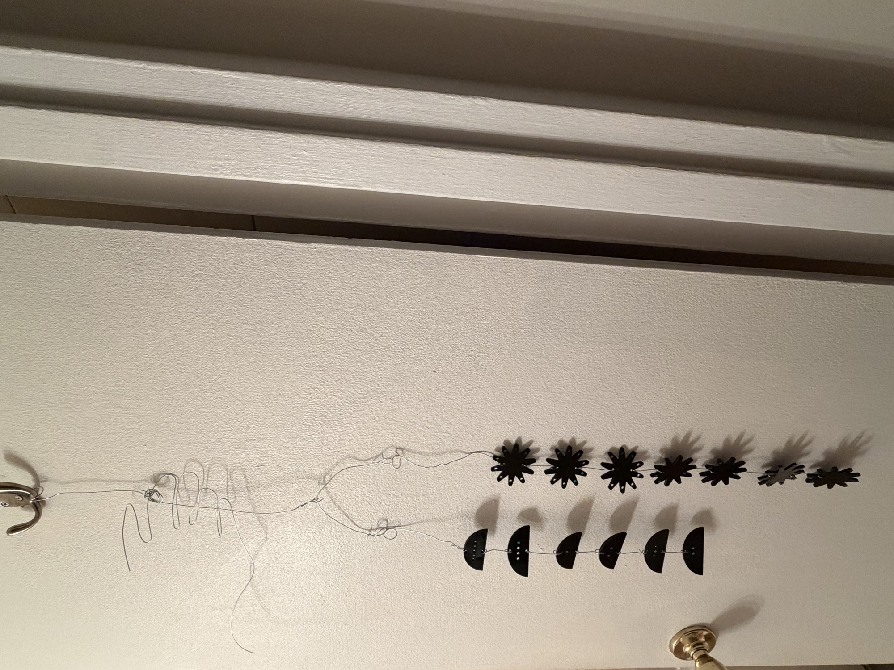
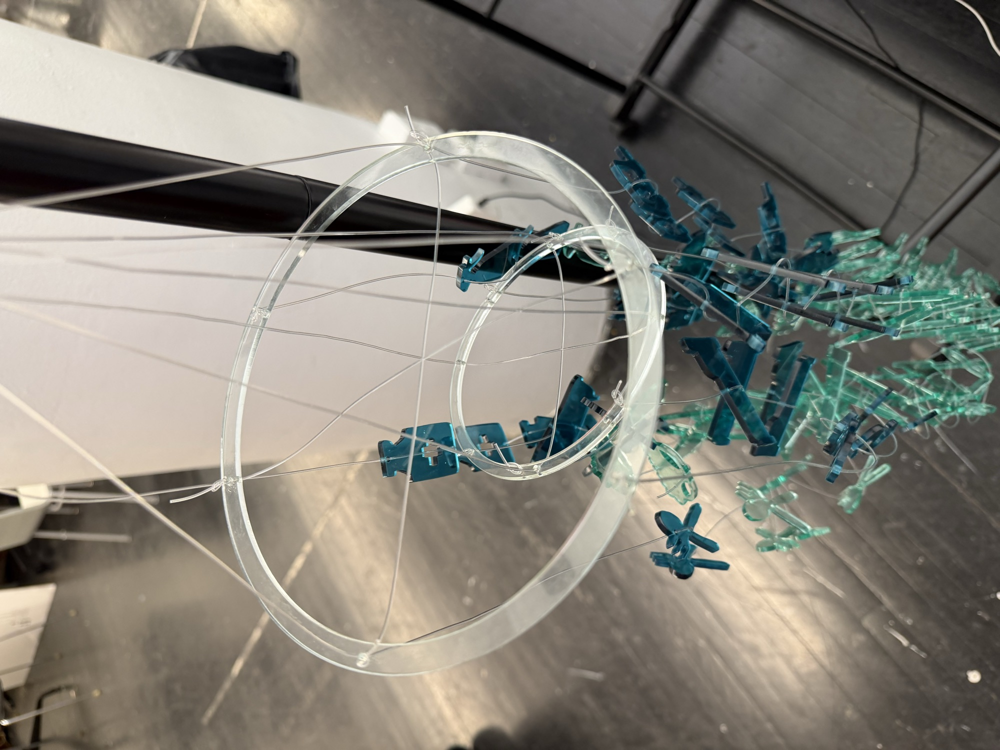
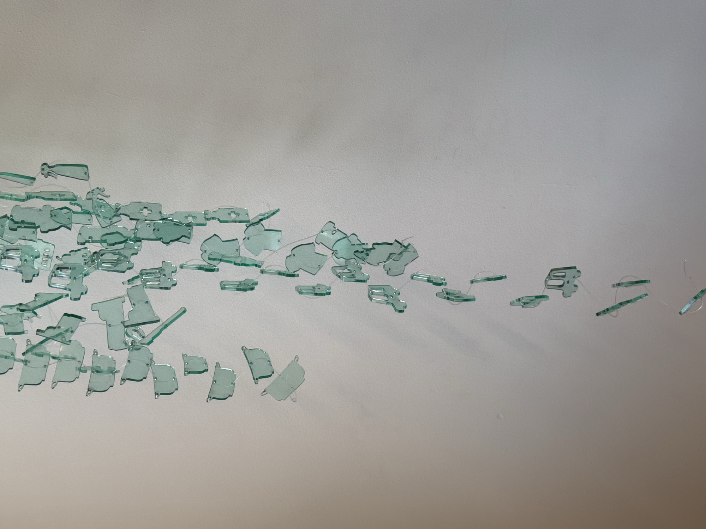

2026 - Data Viz - Acrylic, Lasercut
How can the unpaid labor of caregiving be visualized?
Process


The project began by sketching out visual ideas for the dataset and constructing a lightbox house prototype. While this early version established the foundational motif of domestic labor, it made the underlying data difficult to interpret and failed to convey the sheer volume of people affected or the true scale of their impact.

Drawing inspiration from Alexander Calder, the project shifted toward a mobile form to mirror the balance and instability of the caregiving experience. However, directly translating the granular survey percentages from the 2025 AARP and National Alliance for Caregiving national study into clear visual data within this kinetic structure remained a significant challenge.

This phase focused on creating a clearer distinction between instrumental activities of daily living, representing logistical work, and activities of daily living, representing intimate bodily work. By suspending these two task categories within a wired hand structure, the physical layout began to take shape, though feedback highlighted the need to make the individual task icons far more recognizable.

To address legibility, the icons were redesigned to be instantly identifiable as specific caregiving tasks. However, executing the entire piece in a single uniform color—intended to rely solely on projected light and wall shadows for visual impact—proved visually unappealing and technically frustrating, ultimately obscuring the data rather than illuminating it.

Moving away from the hand form, the structural layout was reorganized into concentric hanging rings to streamline visual communication. An inner ring was assigned to the logistical tasks while an outer ring held the bodily care tasks, establishing a cleaner, more readable hierarchy that better balanced the kinetic weight of the hanging components.
Outcomes
The final prototype successfully shifts the unit of measurement so that each acrylic unit represents 2 million people, capturing the true scale of America’s 63 million caregivers. Introducing darker teal acrylic creates a clear color distinction for the 29% share of the "sandwich generation" simultaneously raising children. Crowned with a house at the top and joined with delicate jewelry rings, the finished piece allows light to cast shadows on the wall, capturing how this immense labor happens quietly at home while reflecting the systemic invisibility of this workforce.


